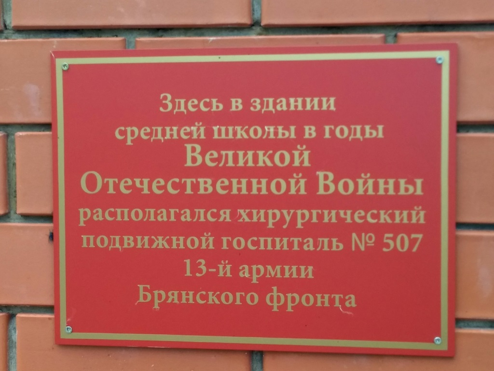

Места нашей области, посвящённые Великой Победе
 Домой
Домой
Памятник военным медикам (Тербуны)
Памятник военным медикам – это дань уважения тем, кто во время Великой Отечественной войны выполнял ежедневный подвиг, выхаживая и возвращая в строй раненых бойцов. Медицинские работники сражались за жизнь каждого солдата, работали госпиталях, медсанбатах, санитарных ротах. Каждый день медсестры выносили с поля боя раненых, хирурги круглосуточно оперировали, доставали пули и осколки из израненных тел.
Торжественное открытие памятника военным медикам состоялось 5 мая 2016 года. Авторами проекта стали местные жители: преподаватель тербунской школы искусств Алексей Белоглазов и кузнец Алексей Озерских.
На композиции, выполненной из скульптурного цемента, изображена медицинская сестра в гимнастерке. Склонившись на колени, она бинтом перевязывает большое сердце – символ жизни. Рядом медицинская сумка. Фоном для белой скульптуры служит красная кирпичная стена с красным медицинским крестом.
Изображения:
